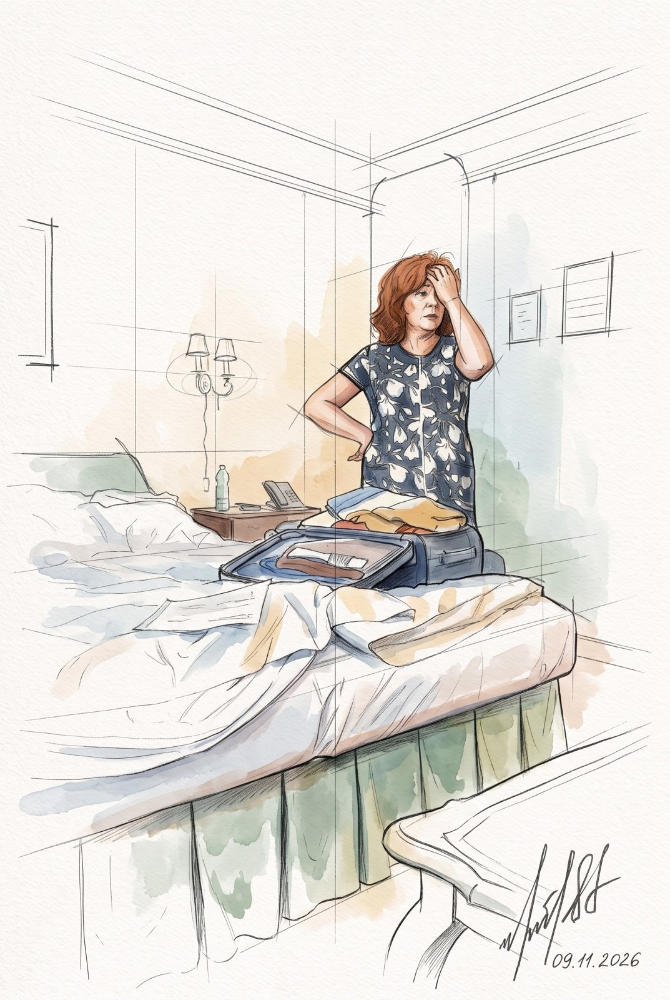
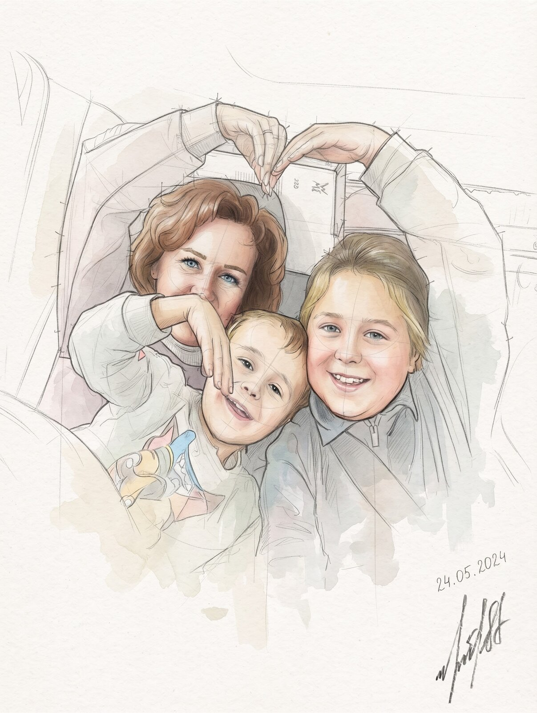
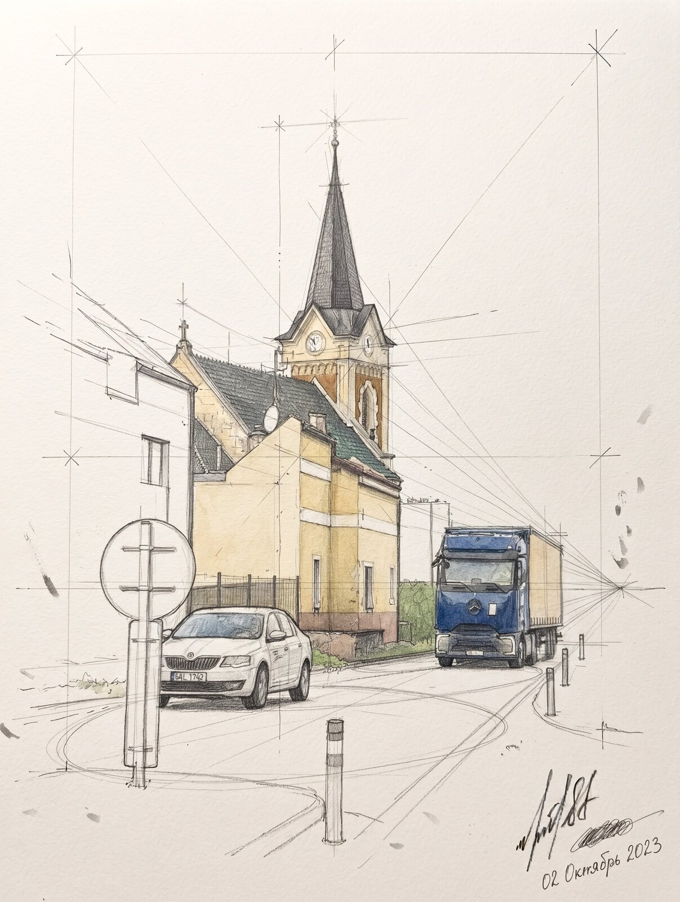
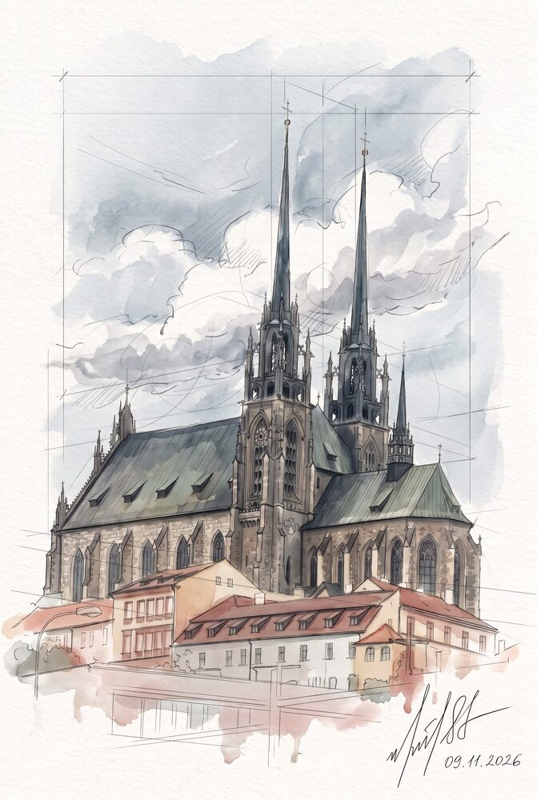
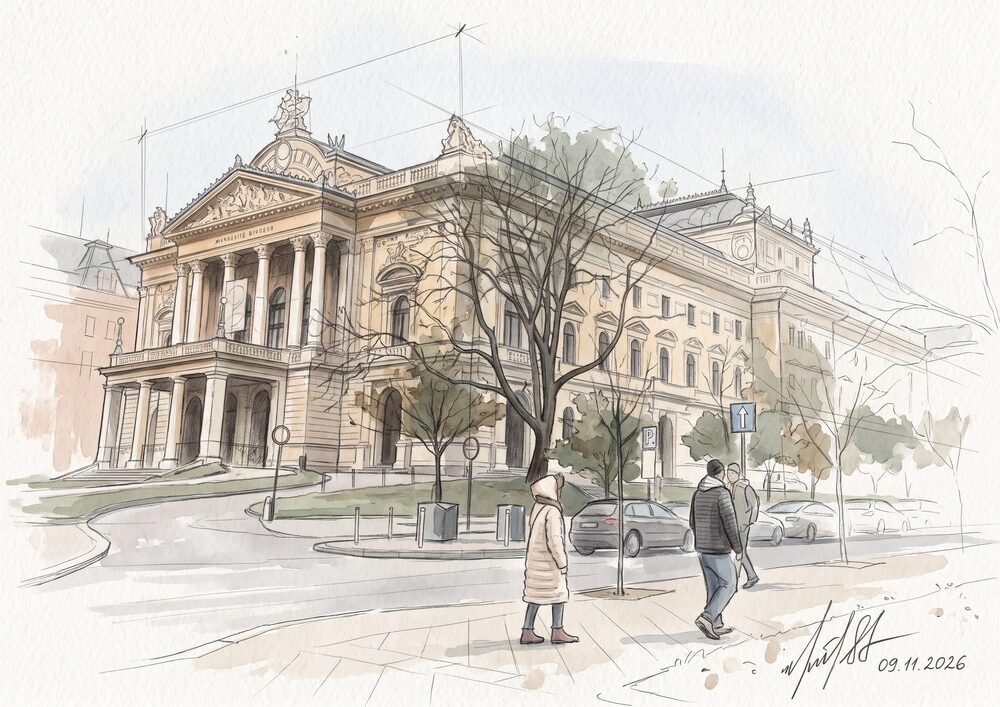
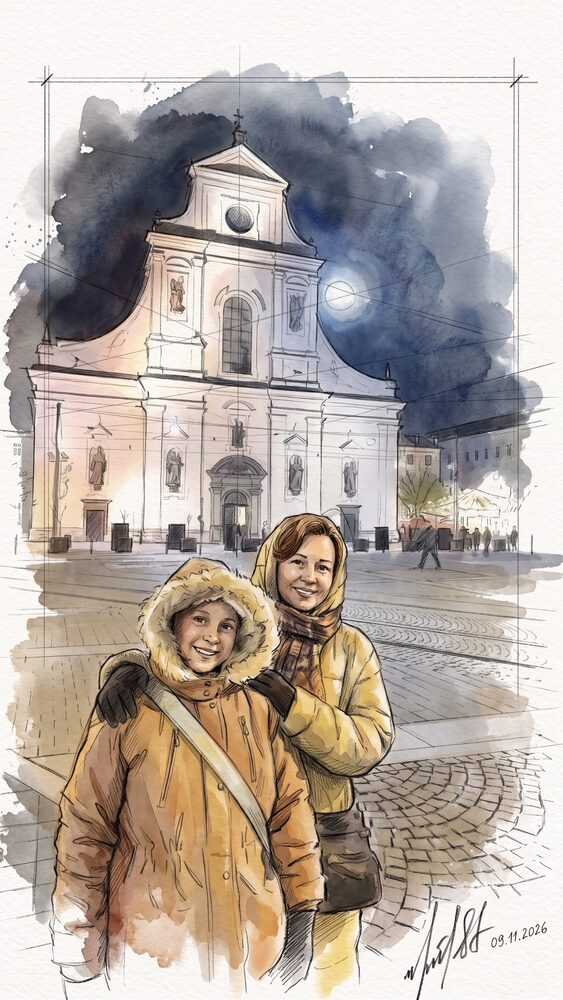
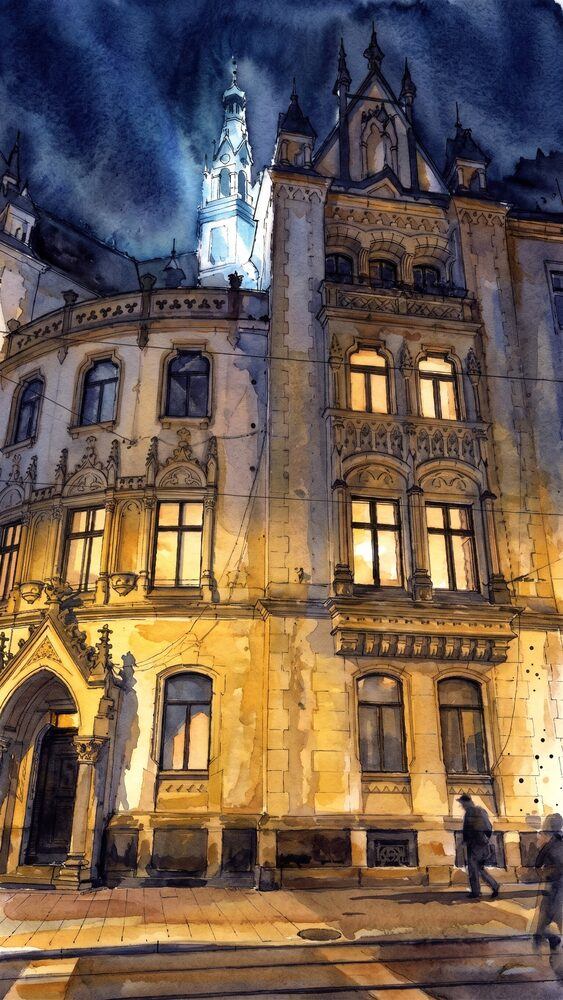
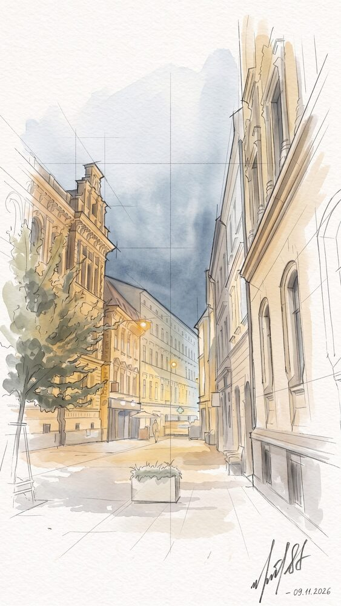
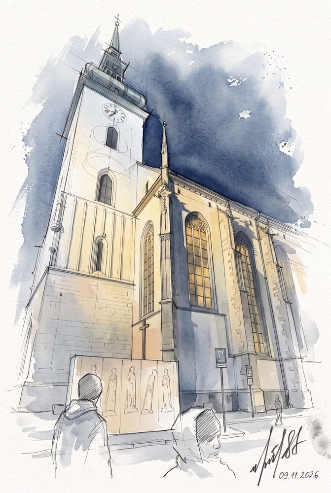

Переезд в Чехию. Брно
Прощаемся с Веной и собираемся в дорогу

Сборы
Последнее утро в Pension Suzanne (Пансион Сюзанн). Чемодан раскрыт на кровати, вещи никак не хотят в него влезать, а над тумбочкой всё так же горит знакомое бра на два рожка. Ещё немного — и в путь, в Brno (Брно).
Граница
Днём машина катится на север, и вот уже позади Австрия — мы в Чехии. Никакого шлагбаума, просто другие номера на машинах и другие названия на указателях. В салоне весело: ладони складываются в сердечко, все улыбаются в камеру.

Первая чешская деревня: жёлтый домик, церковь со шпилем и часами на башне, белая Škoda (Шкода) у обочины и синий грузовик навстречу. До Brno (Брно) уже совсем недалеко.

Брно
Brno (Брно) встречает облаками. Над крышами старого города поднимаются два острых шпиля Petrov (Петров, собор Святых Петра и Павла) — их видно отовсюду, по ним легко понять, где центр.

Чуть дальше — Mahenovo divadlo (Махеново дивадло, театр Махена) с колоннами и голыми осенними деревьями перед входом. Люди идут по своим делам, а мы просто смотрим.

Вечер
К вечеру темнеет быстро. Белый фасад костёла светится над площадью, рядом фонарь как вторая луна. Капюшоны с мехом, тёплые куртки — и улыбки на память.

Старые дома в огнях: резные башенки, тёплый жёлтый свет в окнах, прохожие под фонарями. Тихие улочки уходят вглубь, на углу горит одинокий фонарь.


Напоследок — высокая башня с часами над тёмным небом. Задираем головы, смотрим вверх и потихоньку идём греться.
